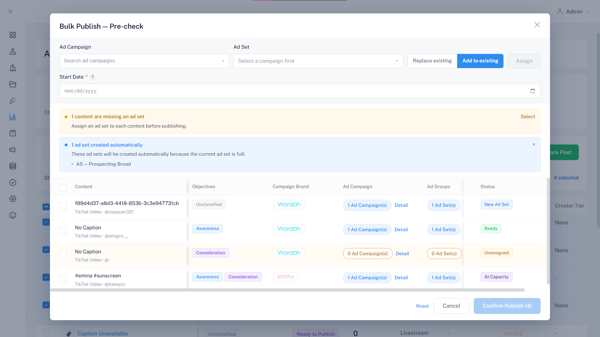
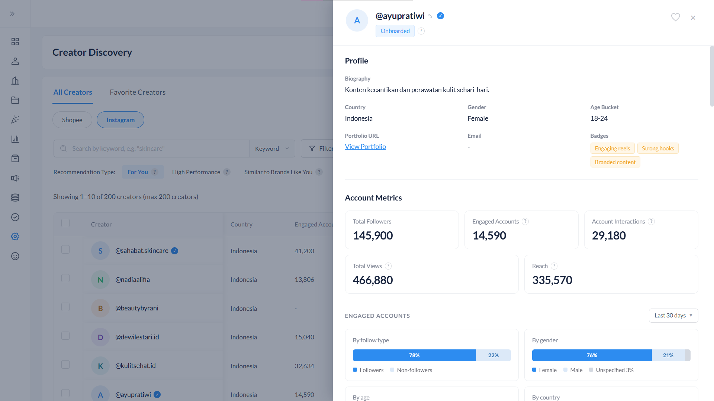
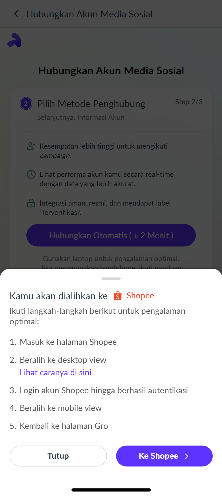
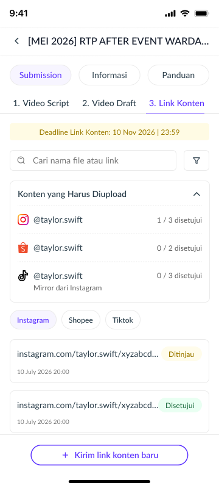
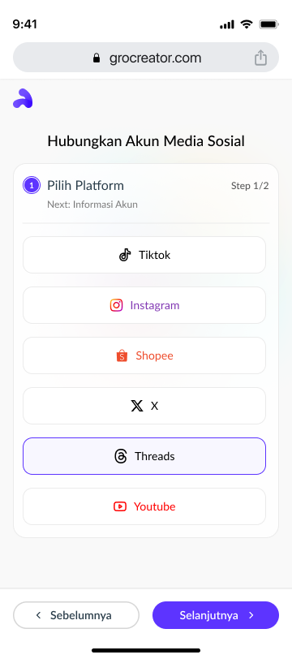
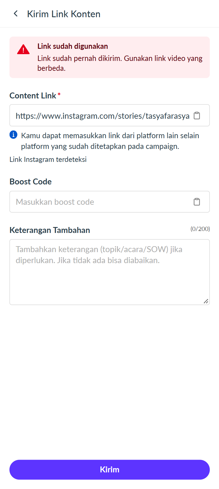

Gro Creator Site
Designing the creator, agency, and admin sites of Gro, Paragon's creator platform, across 8+ product releases.
- Role
- UI/UX Designer
- Timeline
- April - September 2026
- Stack
- Figma · Calude Design · Lark
- Outcome
- 8+ releases · 20+ pages

About the project
Gro is a creator platform by Paragon Corp. It has three sites: one for creators who join campaigns, one for agencies that manage groups of creators, and one for the internal admin team. From April to September 2026, I worked as a UI/UX Designer Intern on all three. Each release started with a business requirement, and my job was to turn it into clear user flows and high-fidelity designs that the engineers could build.
The challenge
Gro's three sites are used by very different people, and new releases came in quickly. This created two challenges. First, the sites could slowly drift apart, so the same feature might look and behave differently for a creator, an agency, and an admin. Second, with so many releases, there was little time to check whether a design actually worked before it shipped. I needed a shared design system to keep things consistent, and a habit of testing with real users.
How I worked
- Started from the requirement. After I get a requirement, I also do my own research, look at how users would actually go through the flow, look for edge cases, and discuss with PMs early so problems get solved before development.
- Validated every release. Each release got a UI/UX check with the business users and design adjustments before handoff.
- Tested the big changes with users. For releases with major changes, I ran usability tests with internal stakeholders and external users. Across the internship, that was 10+ sessions.
- Checked the build on staging. After development, I did a UI/UX check on staging and gave feedback to the developers, so the pages ran smoothly after release.
- Documented the design. I documented each design, so future changes can be made with a clear record of what was decided and why.
What I designed
I designed 20+ pages across 8+ releases. These are the six I'd like to highlight:
- Bulk publish ads: Turns one-by-one ad boosting into a bulk process on the admin site, with a pre-check step before publishing.
- Creator discovery Instagram: Lets admins browse Instagram creators with discovery metrics, like a window shopping experience, without needing a Gro account.
- Shopee binding: Lets creators connect their Shopee account to Gro automatically, with step-by-step guidance in the flow.
- Define minimum submission: Lets admins set how many contents a creator must submit per platform when creating a campaign, and tracks the progress. This release went through 10 usability tests.
- Threads binding: Lets creators connect their Threads account to Gro, with account-ownership validation so uploads only come from the creator's own account.
- Content submission: Detects duplicate links and checks the posting time against the campaign start, so creators know right away why a link can't be submitted.






Outcome
Every release had a UI/UX check before handoff and again on staging, and the bigger changes were tested with external users. What I took from this project: testing early and documenting clearly saves time later, for designers and developers.
What's next
Let’s work together.
I’m open to UI/UX design roles and collaborations. Let’s talk about how I can contribute.